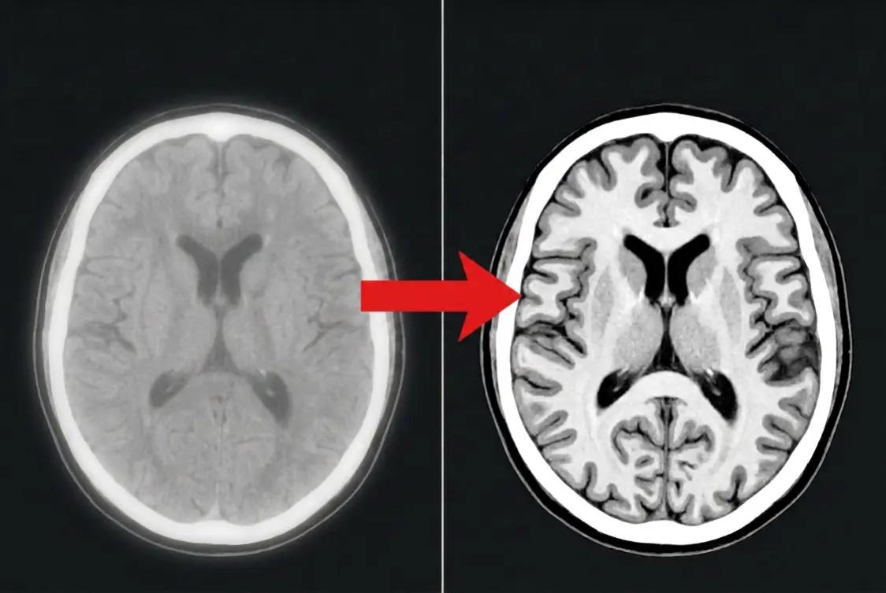

Cambridge researchers identify the hidden cause of memory loss in over-50s — and a simple morning routine that may reverse it
A toxic heavy metal found in five everyday foods is silently building up in the brains of millions of Britons. New research suggests it may be the true trigger behind brain fog, memory lapses and early-onset cognitive decline.
Memory loss. Mental confusion. Forgetting where you left your keys, losing a word mid-sentence, or feeling as though a thick fog is clouding your thoughts.
For most people, these moments are quietly dismissed as "just getting on a bit." Your GP might nod sympathetically and suggest it's perfectly normal for your age. Your family might joke about it over Sunday lunch.
But what if it isn't normal at all?
What if these "senior moments" are actually your brain sending out a distress signal — one that almost everyone ignores until it's far too late?
The discovery that changed everything
For decades, the medical establishment treated memory decline as an unavoidable part of ageing. Something you simply had to accept, like grey hair or creaky knees.
But a team of neuroscientists has uncovered something that turns that assumption on its head entirely.
Their research revealed that the brain doesn't simply "wear out" with age. Instead, a buildup of toxic plaque — triggered by a specific heavy metal — gradually blocks the connections between brain cells, silently destroying your ability to think, remember and concentrate.
This isn't some fringe theory. Research published in peer-reviewed journals has shown that cadmium exposure is directly linked to accelerated cognitive decline, particularly in adults over 50.
And the figures are sobering: according to recent studies, more than 78% of Britons over the age of 50 may already have dangerous levels of this toxin circulating in their bodies without the faintest idea.

The early warning signs most people brush off
The truly insidious thing about cadmium poisoning is how ordinary the early symptoms seem. They're the kind of things you'd never bother mentioning to your doctor:
- Walking into a room and completely forgetting why you went in
- Losing a word mid-sentence — as though it's been wiped from your mind
- Putting your keys down and having absolutely no recollection of where
- Struggling to follow the plot of a programme you've been watching for years
- Feeling mentally "foggy" for hours, particularly in the afternoon
- Forgetting appointments, birthdays, or conversations you had just days ago
Each one, taken on its own, feels trivial. "Everyone does that," you tell yourself.
But taken together, they paint a very different picture. These aren't signs of normal ageing. They're the early stages of a brain being slowly, silently poisoned.
The breakthrough: a way to fight back
Here's the good news — and it's genuinely remarkable.
The very same researchers who identified this toxic mechanism also discovered something unexpected: a natural compound, derived from a substance most people already have in their homes, that appears to reactivate the brain's own self-cleaning system.
Think of it like this: your brain has a built-in "waste disposal" mechanism designed to flush out harmful deposits. But cadmium effectively jams the system, allowing toxic plaque to pile up unchecked.
This compound essentially unjams it — allowing the brain to begin clearing out years of accumulated damage.
"What surprised us most was how quickly cognitive function began to improve once the brain's natural detoxification pathway was restored. We observed measurable changes in as little as a few weeks."
— Lead researcher, neurodegenerative disease laboratory
The method itself is remarkably straightforward. It takes roughly 30 seconds each morning, costs less than £2 a day, requires no prescription, and has none of the side effects associated with conventional pharmaceutical treatments.
Thousands of people across the UK have already begun using it. Many report noticeable improvements within the first week: sharper recall, clearer thinking, and that persistent "brain fog" finally lifting.
Why this matters right now
Dementia is now the leading cause of death in England and Wales. The NHS spends billions each year managing its consequences — yet almost nothing on prevention at the individual level.
If you're over 50, the odds are that this toxic metal is already building up in your brain. Not because you've done anything wrong, but simply because these contaminated foods are everywhere — in every supermarket, in every kitchen cupboard.
The question isn't whether you're being exposed. It's whether you're going to do something about it before the damage becomes permanent.
Find out which 5 common foods are contaminating your brain — and the simple 30-second morning routine that could protect your memory for years to come.
Over 47,000 people have already seen this. Availability may be limited.
See the Full ReportThis article is for informational purposes only and does not constitute medical advice. Results may vary from person to person. Always consult your GP before making changes to your health routine. This product is not intended to diagnose, treat, cure or prevent any disease.